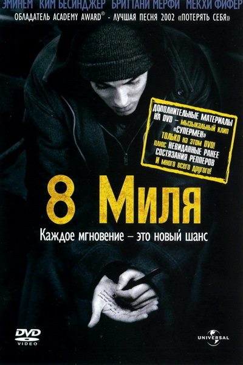
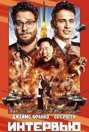

Фильмография
| Год | Фильм | Роль | Афиша | Рейтинг |
|---|---|---|---|---|
| 2002 | 8 миля | Главная роль |  | 7.2/10 |
| 2014 | Интервью | Камео (эпизодическая роль) в комедии |  | 6.8/10 |
8 миля
Джимми Смит-младший по прозвищу Би-Рэб — молодой парень из бедного района Детройта, который мечтает добиться успеха в рэпе. Он работает на заводе, живёт в трейлере с проблемной матерью и постоянно сталкивается с унижением и неуверенностью в себе. Участвуя в рэп-баттлах, Джимми проходит путь от страха сцены к внутренней свободе, постепенно находя свой голос и уважение окружающих.
Интервью
Два американских журналиста получают шанс взять интервью у лидера Северной Кореи. Однако неожиданно для них ЦРУ предлагает использовать поездку как прикрытие для секретной операции. В одной из сцен фильма появляется Эминем в роли самого себя, что становится одной из самых обсуждаемых и провокационных сцен картины.
Актёрские работы
1 главная роль в кино
2002 — дебют в главной роли («8 миля»)
Жанры: драма, музыкальный фильм, комедия (камео)
Автор и исполнитель саундтреков к фильмам
Средний рейтинг фильмов с участием: 7.0+